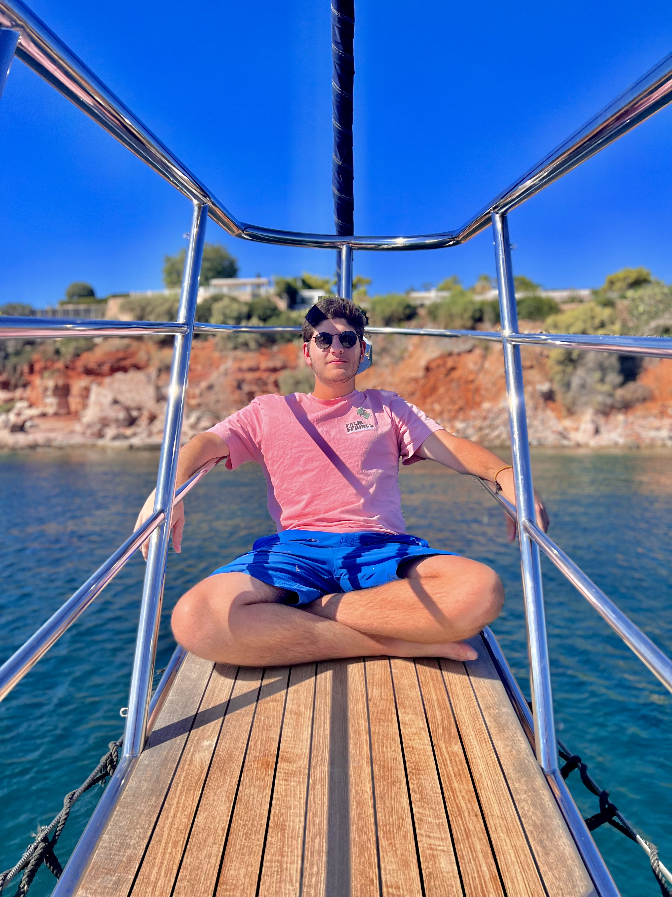

During my trip to Greece for my cousin's wedding
Personal Background: Grew up between two cool middle eastern countries called Lebanon and the UAE and moved to Charlotte in 2020.
Professional Background: Currently working part-time at a local Toyota dealership where I drive and park cars for fun (and money).
Academic Background: Graduated High-School back home, then moved to Charlotte where I attended CPCC for 2 years then transferred here to UNCC in the Fall semester of 2022.
Background in this Subject: I took an amazing free online course called The Odin Project during this past summer and learned a whole lot about HTML/CSS/JS and even Git and GitHub.
Primary Computer Platform: Both MacOS and Windows 11
Courses I'm Taking & Why:
ITSC 2181 - Intro to Computer Systems: It is mandatory for my major.
ITIS 3310 - Software Architecture and Design: It is mandatory for my concentration.
ITIS 3135 - Web-Based Application Design and Development: I want to learn more about this subject because it aligns well with my interests.
ITSC 3146 - Intro to Operating Systems & Networking: Required for my major.
ITSC 3155 - Software Engineering: Aligns very well with my interests and goals.
Funny/Interesting Item to Remember me by: I speak 3 languages and drive a legendary ‘06 Ford Escape.
I'd also like to Share: I’m always down to drive anywhere with my legendary ‘06 Ford Escape, so long as it doesn’t break down.